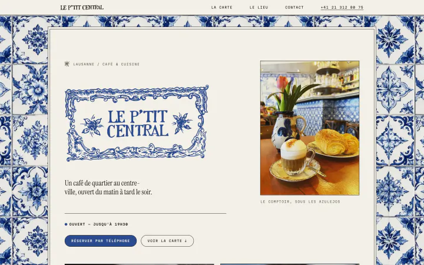
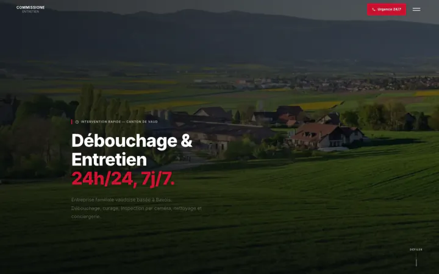

Un site WordPress assemble un thème et des extensions qu'il faut maintenir et mettre à jour. Nous écrivons le code de votre site de A à Z : rien d'inutile n'est chargé, la page s'affiche presque instantanément sur téléphone, et le site vous appartient de bout en bout.
Création de site internet à Lausanne
Un site vitrine ou un site d'entreprise dessiné et codé sur mesure, à Lausanne, par les deux frères qui le mettront en ligne. Pour les PME, les commerces, les cabinets et les indépendants de l'arc lémanique.
- Site vitrine en 3 à 6 semaines
- Hébergement suisse inclus
- Réponse sous 24 h ouvrées
Des sites internet créés à Lausanne et dans le canton de Vaud
Du cinéma de quartier à l'entreprise familiale, chacun dessiné pour ses clients, puis codé à la main.
-

Zinéma
Site vitrine d'un cinéma d'art et essai, rue du Maupas à Lausanne — un accueil en mur d'affiches, l'agenda des séances et la carte de membre.
-

Le P'tit Central
Site vitrine d'un café-restaurant de quartier, rue Centrale à Lausanne — carte par moment de la journée, horaires et réservation en un geste.
-

Amarte Studio
Site d'un centre de yoga et de Pilates à Épalinges, sur les hauts de Lausanne — disciplines, profs et horaires réunis dans un parcours qui mène à la réservation.
-

Commissione Entretien
Site d'entreprise d'une société familiale d'entretien à Bavois, dans le canton de Vaud — cinq prestations, demande de devis et appel direct partout.
Ce que comprend votre site internet
Construit de A à Z pour votre entreprise. Rien d'essentiel n'est en option.
-
Un design dessiné pour votre activité
Une direction artistique tirée de votre métier, de votre quartier et de vos clients, pas un gabarit réutilisé. Des pages précises, lisibles, pensées d'abord pour le téléphone.
-
Un code écrit à la main
Sans WordPress ni Wix : aucune extension à maintenir, rien d'inutile n'est chargé, et le site s'affiche presque instantanément, même sur une connexion mobile moyenne.
-
L'hébergement suisse inclus
Votre site est hébergé chez Infomaniak, en Suisse, avec un nom de domaine à votre nom et un guide pour gérer l'hébergement en toute autonomie.
-
Le référencement local dès la conception
Balises, données structurées, plan du site, adresses de pages propres et textes travaillés avec vous autour de votre activité et de votre région, pour être trouvé à Lausanne et dans le canton de Vaud.
-
Un parcours qui mène à l'action
Chaque page guide le visiteur vers ce que vous attendez de lui : un appel, une réservation, une demande de devis, un passage en boutique.
-
Un suivi après la mise en ligne
Maintenance, évolutions, retouches de contenu : nous restons joignables une fois le site en ligne, et nous suivons son référencement avec vous.
Site vitrine, site d'entreprise, portfolio ou boutique en ligne
Le même soin, quel que soit le format.
-
Site vitrine
Pour un commerce, un restaurant, un cabinet ou un atelier : présenter l'activité, donner envie, et rendre l'appel, la réservation ou l'itinéraire évidents. Le format le plus courant à Lausanne, livré en 3 à 6 semaines.
-
Site d'entreprise
Pour une PME, un bureau ou une fiduciaire : vos prestations, votre équipe, vos références et une demande de devis claire. En français, et en anglais ou en allemand si vos clients le demandent.
-
Portfolio créatif
Pour un DJ, un architecte, un joaillier : un objet visuel fort, qui montre le travail plutôt que de le décrire. Animations, typographie, mise en scène — sans jamais ralentir la page.
-
Boutique en ligne
Pour vendre en Suisse romande et au-delà : catalogue, paiement sécurisé, suivi des commandes, livraison. Dessinée sur mesure, comme le reste, et pensée pour être trouvée sur Google.
Comment se déroule la création de votre site internet
Un seul interlocuteur du premier café à la mise en ligne. 3 à 6 semaines pour un site vitrine.
-
Un café ou un appel
Nous écoutons votre activité, vos clients et ce que le site doit obtenir. Sans engagement.
-
Une proposition sous 24 h ouvrées
Périmètre, calendrier et prix, définis ensemble. Le paiement peut être échelonné en plusieurs mensualités.
-
Design, puis développement
Eliott dessine, Matt code. Des points réguliers, et vous validez chaque étape avant la suivante.
-
Mise en ligne, puis la suite
Le site part sur son hébergement suisse, plan du site et balises en place. Nous restons disponibles pour la maintenance et les évolutions.
Une agence web à Lausanne, à taille humaine
WeAreBrothers est un studio fondé à Lausanne par deux frères : Eliott dessine, Matt code. Vous parlez directement à ceux qui font votre site, sans chef de projet ni intermédiaire, et la plupart de nos clients, nous les rencontrons à Lausanne autour d'un café.
Le site est hébergé en Suisse, chez Infomaniak, et il vous appartient de bout en bout : nom de domaine, code, contenus. Et quand une entreprise a besoin de plus qu'un site, nous développons aussi des applications de gestion sur mesure.
Où nous créons des sites internet
- Lausanne
- Pully
- Renens
- Épalinges
- Morges
- Nyon
- Vevey
- Montreux
- Yverdon-les-Bains
- Genève
Dans tout l'arc lémanique et le canton de Vaud. Pour le reste de la Suisse romande, tout se fait très bien à distance.
Vous avez déjà un site ? Nous faisons aussi la refonte.
Nous gardons ce qui fonctionne — contenus, adresses des pages, référencement acquis — et nous redessinons et recodons le reste. Le nouveau site remplace l'ancien sans interruption, et sans perdre votre place sur Google.
Créer son site internet : vos questions
Prix, délais, hébergement, référencement : ce qu'on nous demande avant de commencer.
Poser une autre questionLe prix suit le périmètre : nombre de pages, design, fonctionnalités, contenus à produire. Nous le définissons ensemble après un premier échange, sans surprise ensuite, et le paiement peut être échelonné en plusieurs mensualités. Vous recevez une proposition sous 24 h ouvrées.
Comptez généralement 3 à 6 semaines pour un site vitrine, davantage pour un projet sur mesure ou une boutique en ligne. Le calendrier est fixé ensemble au départ, avec des points réguliers jusqu'à la mise en ligne.
Rien d'obligatoire. Venez avec votre activité, ce que vous attendez du site et, si vous en avez, des sites que vous aimez. Logo, textes et photos existants sont bienvenus ; s'ils manquent, nous voyons ensemble comment les produire, et cela entre dans la proposition.
Oui. Chaque site est dessiné pour le petit écran d'abord, puis adapté aux tablettes et aux ordinateurs. La plupart de vos visiteurs arrivent depuis un téléphone, c'est là que le site doit être impeccable.
Chaque site est codé pour être rapide, lisible par Google et structuré pour le référencement local : balises, données structurées, plan du site, textes travaillés avec vous autour de votre activité et de votre région. Le référencement se construit ensuite dans la durée, et nous restons disponibles pour le faire progresser.
Le site est hébergé en Suisse chez Infomaniak, hébergement inclus, avec un guide pour le gérer vous-même. Le nom de domaine, le code et les contenus vous appartiennent.
Oui. Un site peut exister en français et en anglais, ou en allemand pour le reste de la Suisse. Chaque langue a ses propres adresses, signalées à Google, pour que chaque visiteur tombe sur la bonne version.
Oui. Nous gardons ce qui fonctionne — contenus, adresses des pages, référencement acquis — et nous redessinons et recodons le reste. Les anciennes adresses sont conservées ou redirigées, et le nouveau site remplace l'ancien sans interruption.
Oui. Le Zinéma, rue du Maupas, Le P'tit Central, rue Centrale, ou Amarte Studio à Épalinges sont des sites que nous avons dessinés et codés pour des lieux de Lausanne et de ses hauts. Artisans, créatifs et indépendants du canton de Vaud nous confient aussi leur site.
Un constructeur en ligne produit un site standard sur lequel vous êtes seul. Avec nous, vous rencontrez à Lausanne les deux personnes qui dessinent et codent votre site internet, vous en êtes propriétaire de bout en bout, et il est construit pour votre marché : vos clients, votre quartier, votre canton. Le code sur mesure charge plus vite qu'un gabarit et donne une base saine pour le référencement.
Le studio est à Lausanne et c'est là que nous rencontrons la plupart de nos clients, autour d'un café. Nous travaillons dans tout l'arc lémanique — Pully, Renens, Épalinges, Morges, Nyon, Vevey, Montreux, Yverdon-les-Bains, Genève — et à distance pour le reste de la Suisse romande.
Parlons de votre site internet.
Un café ou un appel, une proposition, puis on construit. Réponse sous 24 h ouvrées, sans engagement.
Lausanne, Suisse —